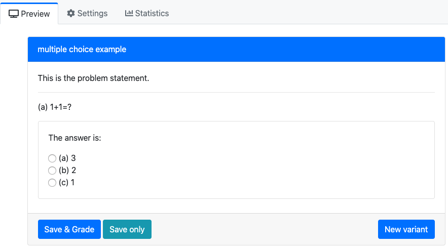
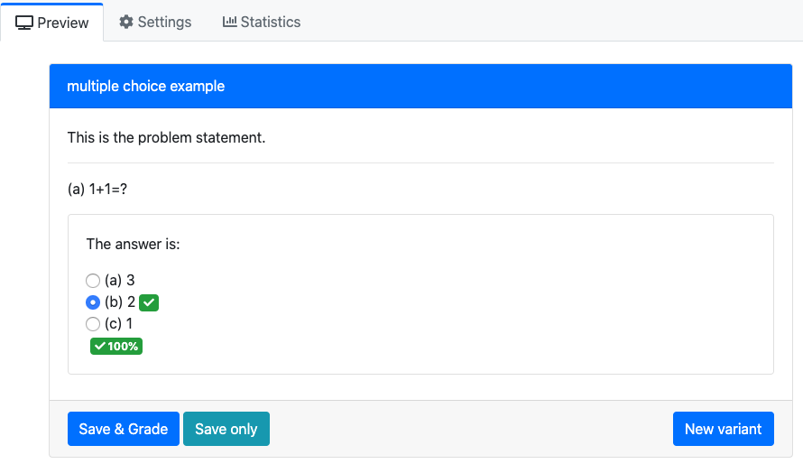

Multiple Choice¶
Reference: (link)
The multiple choice only requires you to modify:
| Folder/File Name | Usage |
|---|---|
| if this is a standalone problem: info.json | The information of the question such as title, topic, tags, and uuid. |
| if you want have conditional answers: server.py | Set up the condition for answers |
| question.html | The main body of the question |
A pl-multiple-choice element selects one correct answer and zero or more
incorrect answers and displays them in a random order as radio buttons.
An example of the question.html¶
<pl-question-panel>
<p>
This is the problem statement.
</p>
</pl-question-panel>
<pl-question-panel><hr></pl-question-panel>
<pl-question-panel>
<p>
(a) 1+1=?
</p>
</pl-question-panel>
<div class="card my-2">
<div class="card-body">
<pl-question-panel>
<p>
The answer is:
</p>
</pl-question-panel>
<pl-multiple-choice answers-name="answer_a" weight="2">
<pl-answer correct="false"> 1 </pl-answer>
<pl-answer correct="false"> 3 </pl-answer>
<pl-answer correct="true"> 2 </pl-answer>
</pl-multiple-choice>
</div>
</div>
The problem will be:

When you clicked the correct answer:

Conditional Answers¶
Assume we want to have conditional answers, for instance, the answers of the multiple choice depend on the previous answer. Here we have an example, the p-value is calculated from previous answer (we omiss how to get p, but use the function sample as an example). Here the p (in Python is p, in R is p_r, use the function ans=list(...) to convert) value could be 0.5 or 0.005. The idea is:
If p<0.01, the correct answer is True (reject), and vice versa.
server.py¶
Please note the order for the conditional answers, otherwise the commands data['correct_answers'] = ans and data["params"] = ans will overwrite your conditional answers.
import prairielearn as pl
def generate(data):
values = robjects.r("""
p_r = sample(c(0.005,0.5),1)
# Export
list(
ans = list(p=round(p_r,digits=3))
)
""")
ans = values[0]
# Convert from R lists to python dictionaries
ans = { key : ans.rx2(key)[0] for key in ans.names }
# Setup output dictionaries
data['correct_answers'] = ans
data["params"] = ans
# Here is the start for the conditional answers
if data['correct_answers']["p"]<0.01:
# The option "True" in question.html is correct
data['params']["answer_b_true"] = True
data['params']["answer_b_false"] = False
else:
# The option "True" in question.html is incorrect
data['params']["answer_b_true"] = False
data['params']["answer_b_false"] = True
question.html¶
<pl-question-panel><hr></pl-question-panel>
<pl-question-panel>
<p>
(b) If the p-value is ${{params.p}}$, we should reject $H_0$
</p>
</pl-question-panel>
<div class="card my-2">
<div class="card-body">
<pl-question-panel>
<p>
The answer is:
</p>
</pl-question-panel>
<pl-multiple-choice answers-name="answer_b" weight="2">
<pl-answer correct="{{params.answer_b_true}}"> True </pl-answer>
<pl-answer correct="{{params.answer_b_false}}"> False </pl-answer>
</pl-multiple-choice>
</div>
</div>
Customizations¶
| Attribute | Type | Default | Description |
|---|---|---|---|
answers-name |
string | — | Variable name to store data in. |
weight |
integer | 1 | Weight to use when computing a weighted average score over elements. |
inline |
boolean | false | List answer choices on a single line instead of as separate paragraphs. |
number-answers |
integer | special | The total number of answer choices to display. Defaults to displaying one correct answer and all incorrect answers. |
fixed-order |
boolean | false | Disable the randomization of answer order. |
Inside the pl-multiple-choice element, each choice must be specified with
a pl-answer that has attributes:
| Attribute | Type | Default | Description |
|---|---|---|---|
correct |
boolean | false | Is this a correct answer to the question? |